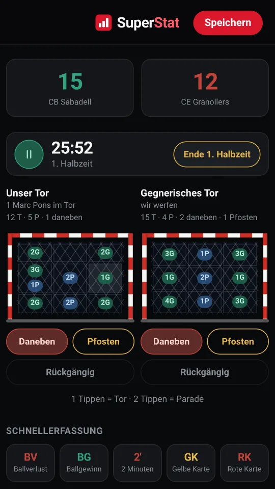
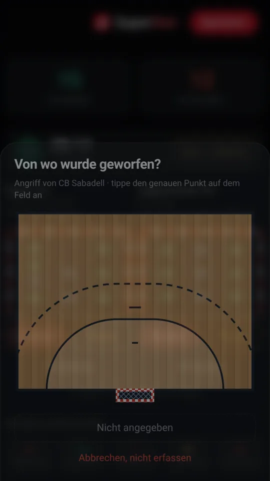
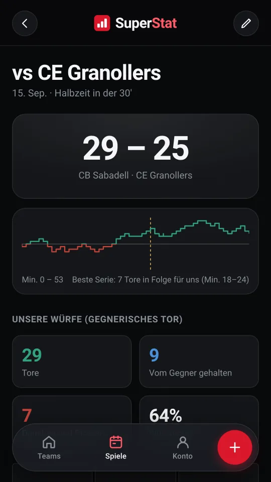
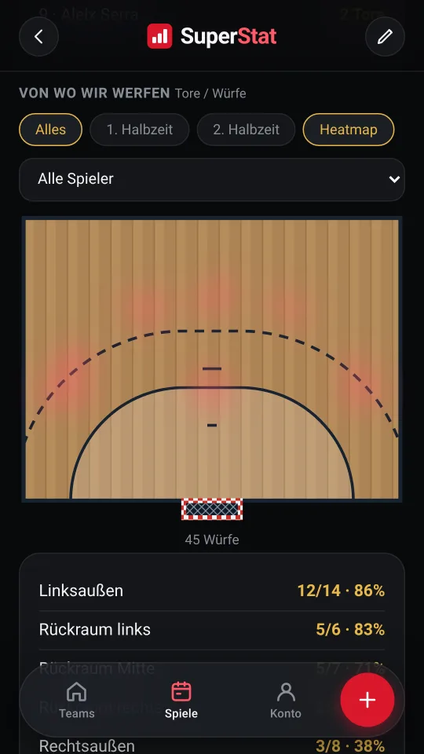
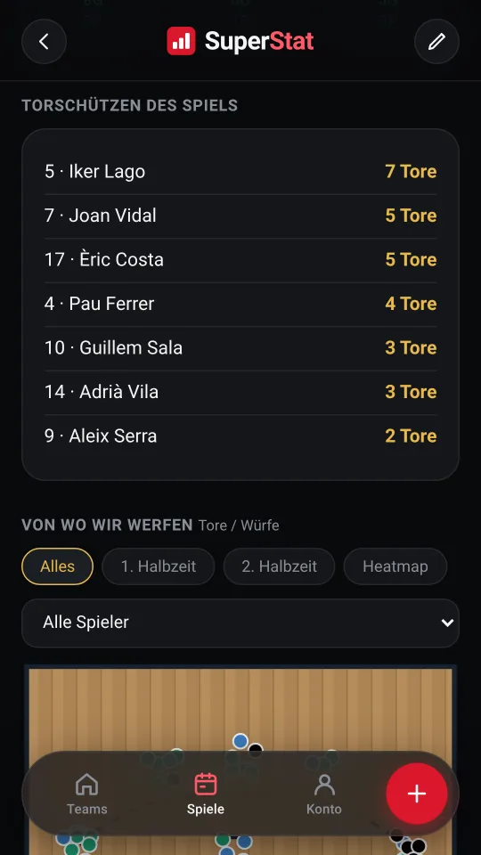
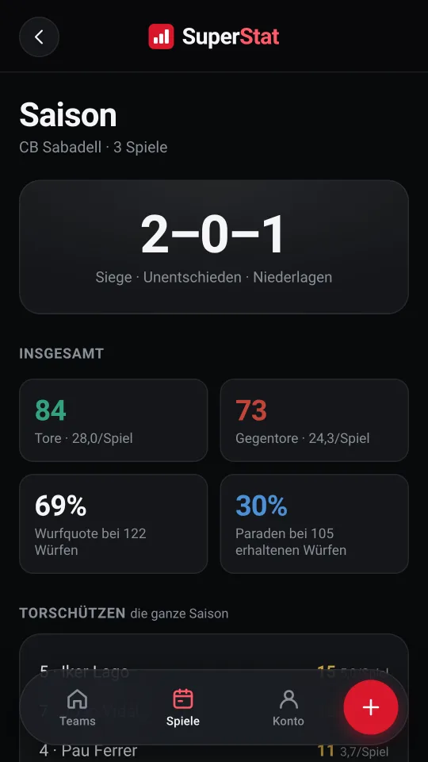
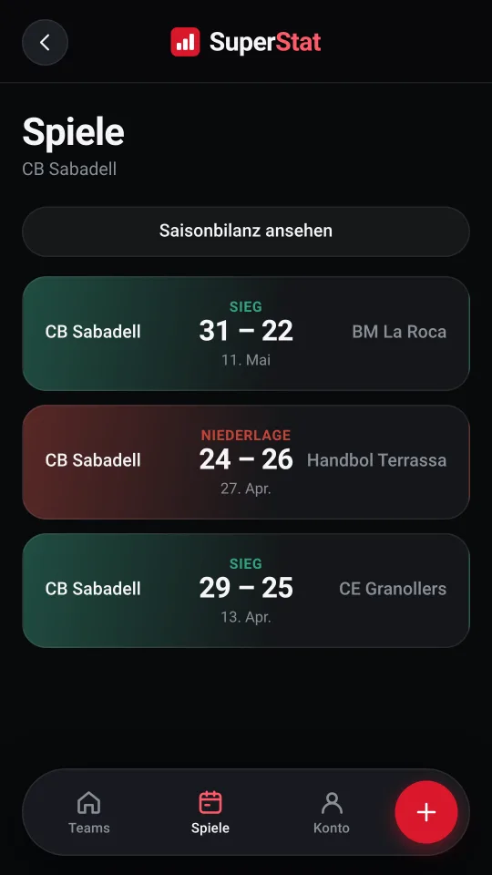
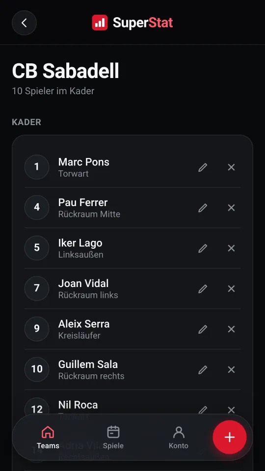

Beide Tore
Deins und das des Gegners, in neun Zonen aufgeteilt. Ein Tippen auf eine Zone ist ein Tor, zwei Tipper sind eine Parade, und für Vorbei und Pfosten gibt es eigene Tasten.
Du erfasst das Spiel, während es läuft, mit dem Handy in der Hand, und beim Schlusspfiff ist der Spielbericht schon fertig.

Alles, was auf dem Feld passiert, passt auf einen Bildschirm — damit du das Spiel nicht aus den Augen verlierst, während du erfasst.
Deins und das des Gegners, in neun Zonen aufgeteilt. Ein Tippen auf eine Zone ist ein Tor, zwei Tipper sind eine Parade, und für Vorbei und Pfosten gibt es eigene Tasten.
Markiere mit einem Finger die genaue Stelle, von der geworfen wurde, auf einer maßstabsgetreuen Feldhälfte. Wer schneller sein will, schaltet es ab.
Mit Pause und einer Taste, mit der du selbst bestimmst, wann die erste Halbzeit endet. Jede Eingabe behält ihre Minute und ihre Halbzeit, ohne anzunehmen, dass eine Halbzeit dreißig Minuten dauert.
Einmal gefragt und dann beibehalten, damit auch Gegentore jemandem zugeordnet sind und die Paradenquote wirklich etwas aussagt.
Schnelle Erfassung von Ballverlusten, Ballgewinnen, Zeitstrafen und Karten — mit denselben zwei Tippern.
Jeder Wechsel wird erfasst, und daraus entsteht das Plus/Minus jedes Spielers: was der Spielstand macht, während er auf dem Feld steht.
Falls der Finger verrutscht. Die letzte Eingabe fliegt raus, fertig.
Der Spielbericht entsteht aus dem, was du erfasst hast. Hinterher ist nichts mehr aufzuschreiben.
Mit der Verteilung der Tore auf die Zonen des Tores.
Der Verlauf des Spiels, mit der besten Serie hervorgehoben.
Wer getroffen hat, wer gehalten hat, und was der Spielstand mit jedem Spieler auf dem Feld gemacht hat.
Über dem Feld, gefiltert nach Spieler und Halbzeit, mit Heatmap.
Die Wurfzone gekreuzt mit der Zone des Tores: die Zahl, mit der sich ein Torwart wirklich vorbereiten lässt.
Das Spiel als CSV, oder als Bild direkt vom Handy geteilt.
Die acht Bildschirme, die du am meisten nutzen wirst, aus einem echten mit der App erfassten Spiel.







Jedes gespeicherte Spiel zählt mit. Die Mannschaft bekommt ihre eigene Bilanz, ohne ein Jahr voller Spiele einzeln zu öffnen.
Mehrere Mannschaften, jede mit ihrem eigenen Kader, und dieselben Daten auf dem Handy und auf dem Rechner.
Deshalb braucht die App keinen. Sie öffnet sich, du erfasst das Spiel trotzdem, und was offen ist, lädt von selbst hoch, sobald das Netz zurück ist.
Wenn das Handy die App mitten im Spiel schließt, bietet sie an, dort weiterzumachen, wo du aufgehört hast.
Ein Konto, mit Google oder mit E-Mail und Passwort, und dieselben Daten auf dem Handy und auf dem Rechner.
Keine Werbung, keine Analyse und kein Tracking: Jedes Konto sieht nur das Eigene. Du kannst jedes Spiel exportieren oder löschen, was du willst, wann du willst.
Sie öffnet sich im Browser, es gibt nichts zu installieren, und sie ist kostenlos.